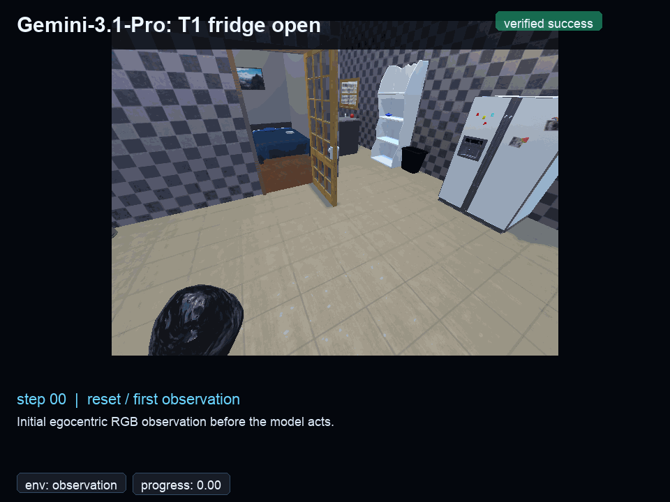
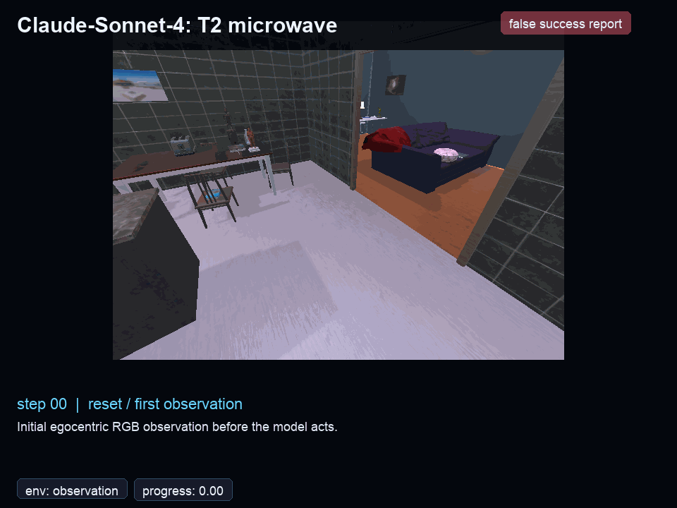
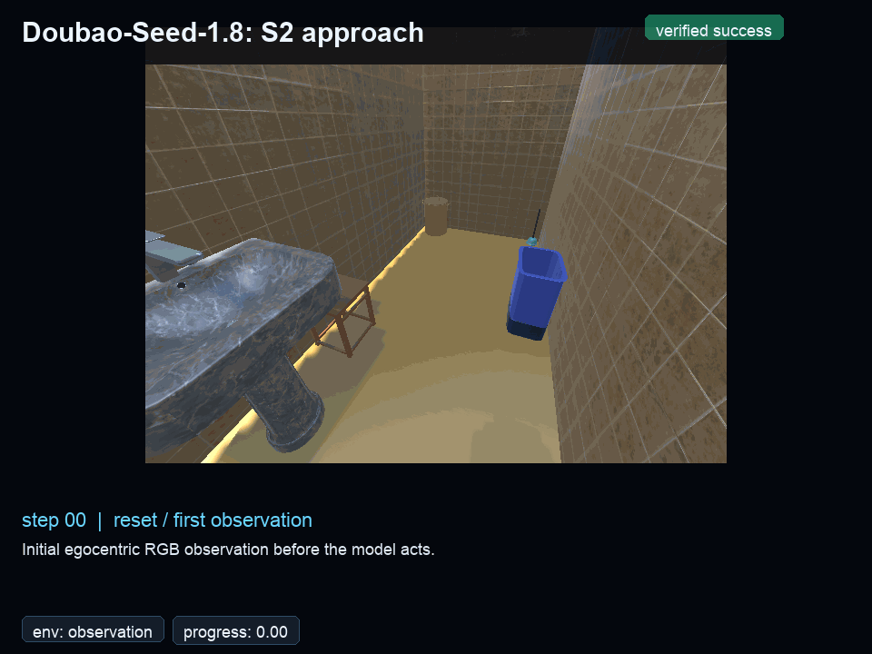
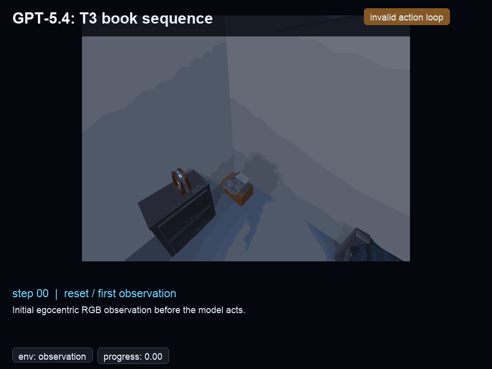
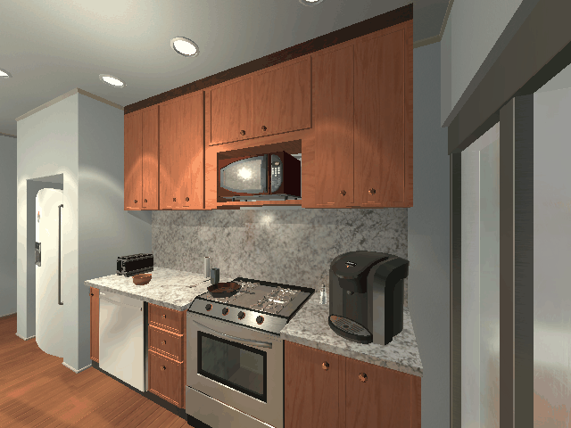
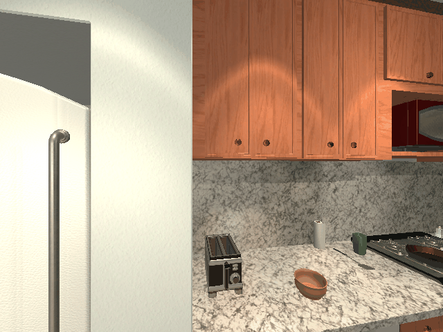

XPeng Robotics Research
Done But
Not Sure
Standard embodied evaluation does not independently score terminal commitment at episode closure.
VIGIL makes that commitment observable: agents see only egocentric RGB, receive no action-success signals, and must end each episode with a semantic report checked deterministically against hidden world state.
This yields W (world-state completion) and B (benchmark success), where B additionally requires a correct terminal report—in manuscript terms, correct terminal commitment.






verified
Gemini-3.1-Pro · AI
Systems with comparable W differ by up to 19.7 pp in B: one converts achieved states into correct reports; another with near-identical execution drifts past the goal without closing.
An action-feedback intervention modeled on proprioceptive signals improves W broadly, yet commitment failures persist in models that do not already ground terminal reports in the achieved state.
Four distinguishable outcomes — missed execution, post-attainment drift, unsupported commitment, and verified success — where standard benchmarks see only pass/fail.
Core finding
Closure vs execution
Aggregate metrics collapse distinct cases: failing to complete the task, completing it but failing to stop, or declaring completion without sufficient evidence. VIGIL separates task-closure failures from execution failures and exposes structured terminal profiles (e.g., FR, NR) invisible under a single success bit.
False Report (FR)
Premature Commitment
The agent reports success without sufficient evidence in the world (unsupported commitment). 65–88% of false success reports occur at zero task progress—no closer navigation, no task-relevant state change (step-level diagnostic in manuscript).
Claude-Sonnet-4: FR = 69.9% (W only 25.2%)
No Report (NR)
Post-Attainment Drift
The agent achieves the goal but never issues a terminal report — it drifts past attainment, continuing to act without recognizing completion.
InternVL3.5-38B: W = 39.9%, B = 17.4% (Δ = 22.5 pp)
Closure profiles differ sharply — even at similar Δ
Gemini-3.1-Pro and Claude-Sonnet-4 have similarly small gaps (Δ ≈ 1–4 pp), yet their closure regimes are opposite: Gemini combines high W (57.7%) with moderate FR, while Claude reaches much lower W (25.2%) but reports aggressively.
A small Δ is not evidence of reliable closure — it may reflect frequent commitment despite weak state support.
Hover to inspect
Outcome partition by model
Proprioceptive action-feedback intervention
As in our manuscript experiments, we add two execution-oriented signals—too_far and path_blocked—after each action (proprioception-style feedback). It reduces execution traps broadly, but terminal reporting improves only for models whose reports are already coupled to achieved task state; others show little or no ΔB despite higher W.
Hover each bar to see ΔW, ΔB, ΔFR, and ΔNR in percentage points under the limited-proprioception intervention.
Diagnostic intervention
Limited proprioception: what changes?
Agent behavior in action
Case Rollouts
Benchmark results
Leaderboard
Each row is one evaluated model variant on the same 1,000 frozen episodes; cells are W/B per family. The headline 19.7 pp gap (comparable W, different B) comes from the manuscript’s primary comparison—not from counting rows here.
| Rank | Model | Type | N | Score | All W/B | Delta | PG | DA | SV | VS | AI | SI | SM | CR |
|---|
8 task families · 1,000 episodes
Task Families
Eight families probe when terminal judgment is hard—target visibility, distance, state uncertainty, temporal dependency, physical constraint—decomposed along atomic perceptual-motor capacities (not domain-only splits) for precise attribution.
Diagnostic
Isolate single bottlenecks (5–20 steps)
Compositional
Chain capacities under longer budgets (25–40 steps)
Citation
Cite VIGIL
@misc{chen2026done,
title={Done, But Not Sure: Disentangling World Completion from Self-Termination in Embodied Agents},
author={Chen, Ying and Fang, Lihuang and Jiang, Rui and Wang, Mingxu and Gu, Zhifeng and Yi, Lei and Chen, Jie},
year={2026},
eprint={2605.08747},
archivePrefix={arXiv},
primaryClass={cs.AI},
doi={10.48550/arXiv.2605.08747},
url={https://arxiv.org/abs/2605.08747}
}